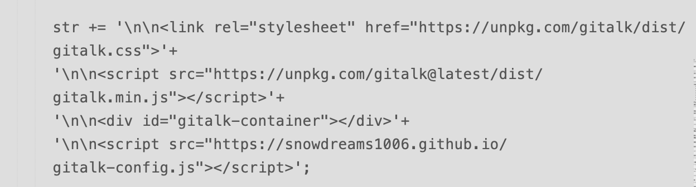

1. 常见问题
1.1. The page build failed for the master branch with the following error
1.1.1. 问题描述

看到这封邮件,一脸懵逼,本地运行 gitbook 服务是正常渲染的,控制台并没有任何报错,谁知道推送到 github 时就报错了!
登录到 github 网站查看网站源码已经同步过来了,但是静态网站无法同步,本地实在找不到任何报错信息,这让我如何是好?
再看 github 反馈用的邮件中说道,如有问题可以回复邮件(If you have any questions you can contact us by replying to this email.).
然后死马当活马医,尝试阐释了我的问题,请求帮助定位错误日志,没想到当天下午就收到 github 的回复邮件,提供了解决办法!

问题是由于 Liquid Warning: Liquid syntax error (line 334) 错误,然而我确定这部分代码是没有任何问题的,因为这是我改造 gitbook-plugin-tbfed-pagefooter 插件时的一段代码,反复确认后发现并没有复制粘贴出错啊!
var moment = require('moment');
module.exports = {
book: {
assets: './assets',
css: [
'footer.css'
],
},
hooks: {
'page:before': function(page) {
var _label = '最后更新时间: ',
_format = 'YYYY-MM-DD',
_copy = 'powered by snowdreams1006'
if(this.options.pluginsConfig['tbfed-pagefooter']) {
_label = this.options.pluginsConfig['tbfed-pagefooter']['modify_label'] || _label;
_format = this.options.pluginsConfig['tbfed-pagefooter']['modify_format'] || _format;
var _c = this.options.pluginsConfig['tbfed-pagefooter']['copyright'];
_copy = _c ? _c + ' all right reserved，' + _copy : _copy;
}
var _copy = '<span class="copyright">'+_copy+'</span>';
var str = ' \n\n<footer class="page-footer">' + _copy +
'<span class="footer-modification">' +
_label +
'\n{{file.mtime | date("' + _format +
'")}}\n</span></footer>';
str += '\n\n<link rel="stylesheet" href="https://unpkg.com/gitalk/dist/gitalk.css">'+
'\n\n<script src="https://unpkg.com/gitalk@latest/dist/gitalk.min.js"></script>'+
'\n\n<div id="gitalk-container"></div>'+
'\n\n<script src="https://snowdreams1006.github.io/gitalk-config.js"></script>';
page.content = page.content + str;
return page;
}
},
filters: {
date: function(d, format) {
return moment(d).format(format)
}
}
};
来源于
gitbook-plugin-tbfed-pagefooter插件的index.js文件,这里为了兼容gitalk插件而集成了相关代码,详情请参考 gitalk 评论插件
1.1.2. 解决方案
根据邮件回复,定位到出错代码片段,真的没发现有什么问题啊?

既然已经确定不是我的问题,那很可能就是 github 的问题了,邮件中推荐我使用 Jekyll 进行构建网站,不不不!
既然已经选择 gitbook 搭建静态网站,那就没必要再使用 Jekyll ,我可不想那么麻烦!
If you are not using Jekyll you can disable it by including a .nojekyll file in the root of your repository.
所以我不妨试试新增 .nojekyll 文件,说不定就好使了呢!
$ touch .nojekyll
$ git add .nojekyll
$ git commit -m "add .nojekyll"
$ git push
天不负我!竟然真的好使了,再也没有收到 github 的报错邮件反馈了,源码和网站都正常更新了!

1.1.3. 小结
据我推测,可能是 github 误认为我的网站是使用 Jekyll 工具构建的,实际上,是使用 gitbook 构建的!
因此,增加 .nojekyll 文件禁用 Jekyll 工具,自然不会再受相关语法限制而报错了.
所以,遇到问题时,不仅要多思考,更应该寻求官方人员的帮助,即使不回你,你也要尝试一下!